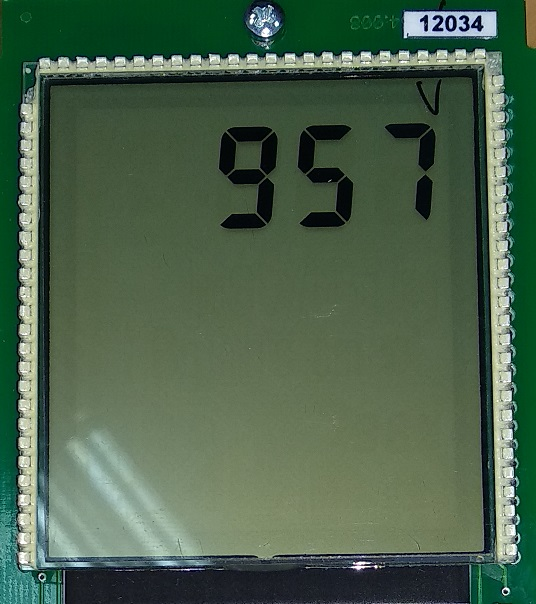

Инициализация 957
После прошивке, при включении дозиметра на табло появляется мигающее сообщение «Err25», сопровождающиеся прерывистым звуковым сигналом (ошибка данных энергонезависимой памяти, означающая, что в данном случае в памяти ничего не записано из-за первого включения).
Это значит, что прибор не инициализирован. Для этого нужно:
- При включении нажать и удерживать кнопку
- Нажать два раза , на экране появится "---":
- Два раза нажать кнопку
- Набрать "957", для этого с помощью клавиш и выбирается цифра, а с помощью выбирается следующая позиция
- После ввода последней цифры, нажать 
Прибор инициирован. После перезагрузки он будет работать в обычном режиме
Также прибор можно инициировать с помощью ПО ATAS tech на ПК